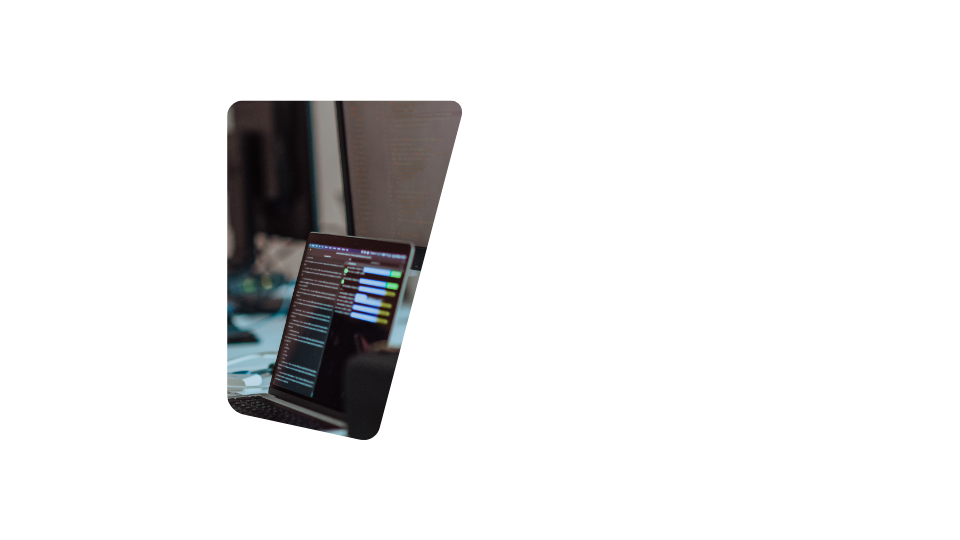

Seu navegador não suporta vídeos HTML5 com tags de vídeo.
Resumo Acadêmico
Análise e desenvolvimento de sistemas
Universidade Cruzeiro do Sul
Polo Anália Franco
02/2023 - 12/2024
Tecnólogo
. Banco de Dados
. Engenharia de Software
. Rede de Computadores
. Projetos de Sistemas de Informação

Menu